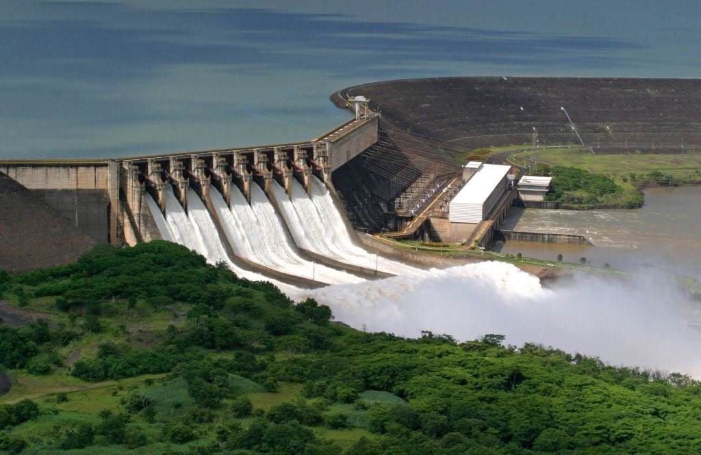

O que é Energia Hidrelétrica?

A energia elétrica é uma forma de potência eficaz na criação do que usualmente se chama voltagem (também conhecida como diferença de potencial elétrico) entre dois pontos, que permitem criar uma corrente elétrica (fluxo ordenado de partículas portadoras de carga elétrica) entre ambos. Assim, a energia elétrica, ou eletricidade, é a forma como os fenômenos relativos a cargas elétricas se denominam. É uma das formas de energia mais utilizada atualmente devido à sua facilidade de transporte e baixo índice de perda de energia durante conversões. A energia elétrica foi descoberta por Tales de Mileto, um filósofo grego, ao esfregar um âmbar (em grego diz-se élektron) em um pedaço de pele de carneiro. Foi então que ele observou que após esfregar o âmbar atraía pedaços de madeira e palha.
Esta descoberta, das cargas elétricas, foi fundamental para a evolução tecnológica e afinal, que seria de nós nos dias de hoje sem equipamentos eletrônicos como a televisão, a internet o rádio ou uma simples lâmpada?
PRINCIPAL FONTE DE LUZ E CALOR
A eletricidade tornou-se na principal fonte de luz, calor e força sendo que os grandes avanços tecnológicos se devem a esta descoberta.
Pode ser obtida mediante diferentes tecnologias. Por meio de termoelétricas, usinas hidroelétricas, usinas eólicas e usinas termonucleares. No geral, estas tecnologias usam um movimento rotativo, que pode ter origem numa fonte de energia mecânica direta (como a corrente de uma queda de água ou o vento) ou de um ciclo termodinâmico (onde se aquece um fluido criando um circuito no qual se move um motor ou uma turbina), para gerar corrente alternada.
Quando é produzida por meio dos elementos naturais como a água, o sol ou o vento, é considerada uma forma de energia limpa pois produz menos poluição em todas as fases de produção, distribuição e consumo, sendo ainda fonte renovável uma vez que não irá esgotar-se. No entanto, é necessário saber que todas as formas de utilização das fontes de energia prejudicam de alguma forma o meio ambiente.
FATOS INTERESSANTES E CURIOSOS
- Entre as informações mais interessantes sobre a eletricidade está:
- Foi descoberta por volta do ano 600 A.C.,
- A velocidade da luz é de 300.000 km/h
- Uma máquina quando fica em Stand By continua a consumir energia embora em menores quantidades.
- Outra situação que muita gente não tem conhecimento é que os refrigeradores
consomem mais energia se estiverem perto do fogão uma vez que precisam compensar o calor que se encontra à sua volta. - Os maiores consumidores de energia elétrica são os EUA e a China.
- Apenas 1% da energia produzida no mundo é de fontes eólicas.